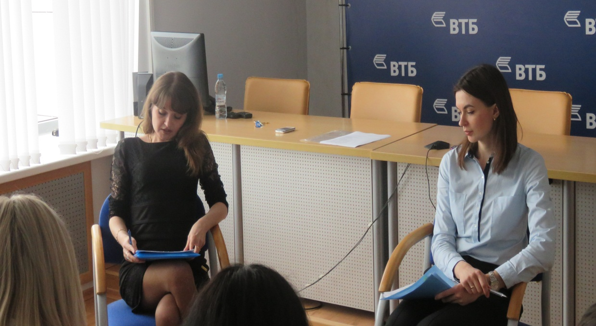
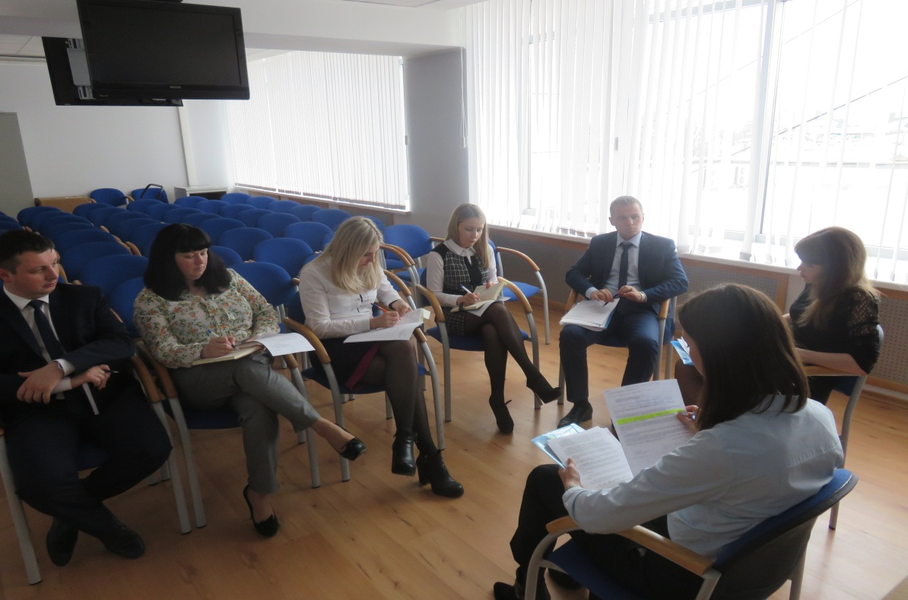
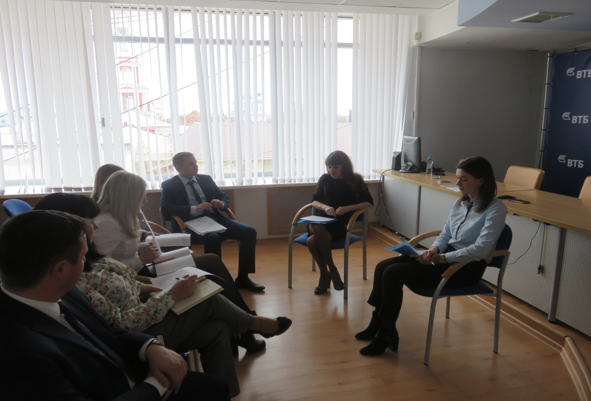

Семинар с финансовыми организациями, организованный АО МК «Фонд содействия кредитованию малого и среднего предпринимательства Тамбовской области»
03 апреля 2017 года в целях оптимизации дальнейшего сотрудничества с финансовыми организациями, а также повышения качества предоставляемых услуг субъектам малого и среднего предпринимательства (далее – МСП), сотрудники АО МК «Фонд содействия кредитованию малого и среднего предпринимательства Тамбовской области» (далее – Фонд) провели семинар на тему: «Новые условия взаимодействия АО МК «Фонд содействия кредитованию малого и среднего предпринимательства Тамбовской области» с финансовыми организациями» для представителей Банков ВТБ и ВТБ 24 (далее - Банки-партнёры).
В рамках семинара были рассмотрены новые условия взаимодействия Фонда с Банками-партнёрами в рамках программы предоставления поручительств Фонда субъектам МСП по кредитным договорам.
Также до представителей Банков-партнёров была доведена информация о АО «Федеральная корпорация по развитию малого и среднего предпринимательства», в частности об условиях предоставления гарантийных продуктов, направленных на повышение доступности банковского кредитования для субъектов МСП: Согарантия и Синдицированная гарантия; Программу стимулирования кредитования субъектов МСП (Программа 6,5»). По итогам семинара определены направления сотрудничества, порядок и формы взаимодействия Фонда и Банков-партнёров.


